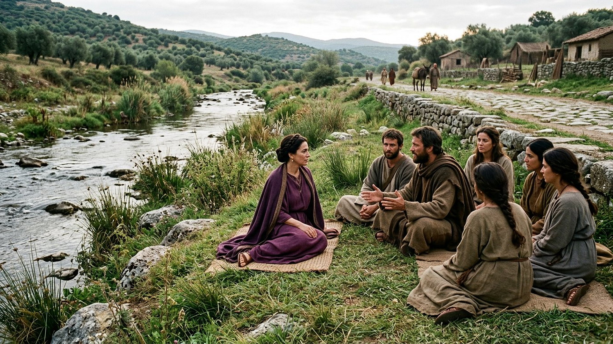
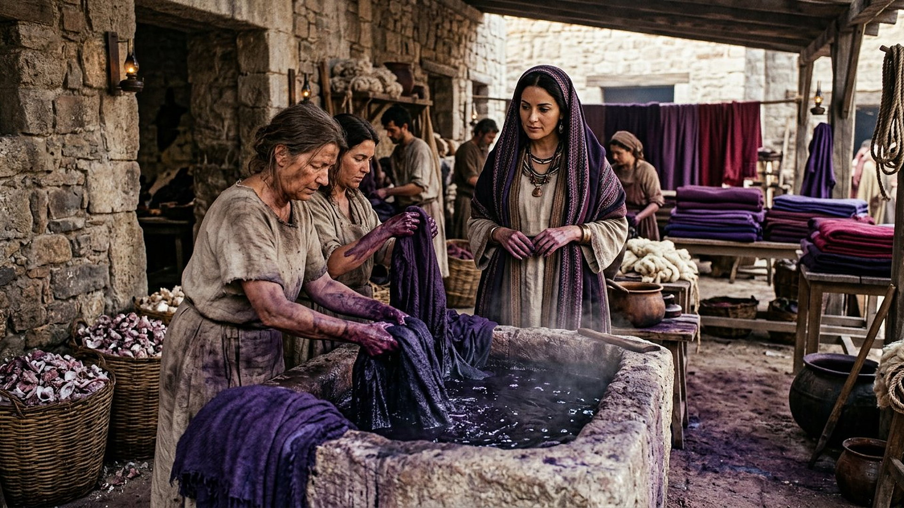
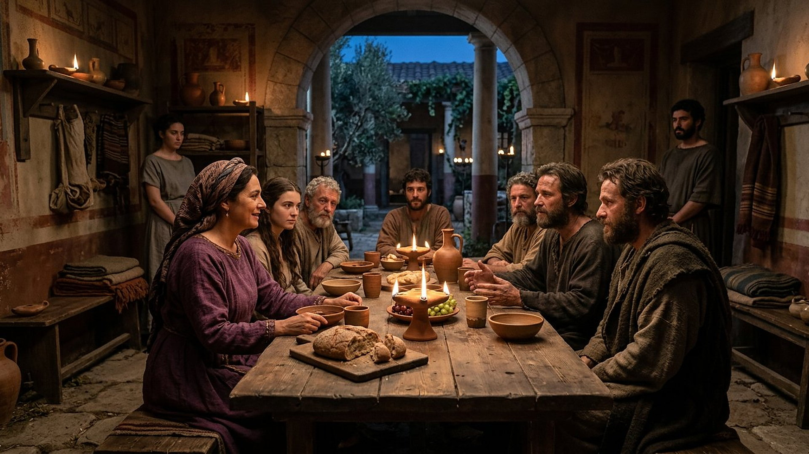

Salle 65 — Actes 16 ACCOMPLIE
Lydie de Philippes : la maison qui insiste
« Si vous jugez que je suis fidèle au Seigneur, entrez dans ma maison, et demeurez-y. Et elle nous pressa par ses instances. » — Actes 16:15 (d’après Segond 1910)
Reconstitution numérique — hors de la porte de Philippes, au bord de la rivière : le lieu de prière où Lydie écoute Paul pour la première fois.
Une marchande de pourpre, première porte ouverte d’Europe
Philippes (translittération grecque : Phílippoi), colonie romaine de Macédoine sur la grande voie Égnace (translittération latine : Via Egnatia), ne semble pas posséder de synagogue assez établie : le jour du sabbat, Paul et ses compagnons sortent « hors de la porte, vers une rivière, où nous pensions que se trouvait un lieu de prière », et ils parlent aux femmes rassemblées là. Parmi elles, « une femme nommée Lydie (translittération : Lydía), marchande de pourpre, de la ville de Thyatire (translittération : Thyáteira), qui craignait Dieu » écoute — « le Seigneur lui ouvrit le cœur ». Baptisée « elle et sa maison », elle retourne l’hospitalité en exigence douce : « si vous jugez que je suis fidèle au Seigneur, entrez dans ma maison ». Dans la lecture retenue par ce musée, Lydie est la première figure européenne pleinement nommée du récit des Actes : une commerçante migrante, venue d’Asie mineure, dont la maison devient en quelques jours le port d’attache d’une communauté naissante — et le refuge retrouvé après la prison.
Le musée présente son court dossier — deux mentions, au début et à la fin du séjour philippien — avec ses questions : son nom est-il un nom propre ou un surnom d’origine, quelle pourpre vendait-elle au juste, et où se trouvait exactement cette berge de prière que la tradition localise encore.
Le récit en cinq temps
D’une berge de rivière à une maison rouverte après la prison, avancez d’une station à l’autre.

Le banc des preuves : un site de l’Unesco, une berge débattue
DÉBATTU
Philippes et sa rivière : lieu de prière traditionnel, adresse non prouvée (EV-74)
Vérifié : le site archéologique de Philippes, inscrit au patrimoine mondial depuis 2016, expose la colonie romaine du récit — forum, théâtre, voie Égnace, basiliques postérieures —, et à l’ouest de la ville coule la rivière où la tradition place le lieu de prière et le baptême de Lydie, marqué aujourd’hui par un baptistère moderne. Débattu : le cours exact fréquenté au Iᵉʳ siècle (le Gangitès, translittération : Gangítēs, des sources anciennes, ou le Zygaktis, translittération : Zygaktís) et l’emplacement précis de la rencontre ; aucune synagogue du Iᵉʳ siècle n’a été identifiée, ce qui convient au « lieu de prière » en plein air des Actes sans le localiser. La salle s’en tient donc au cadre vérifié — la rive hors la porte — sans adresse ni baptistère antique inventés.
LECTURE PROPHÉTIQUE
« Elle nous pressa par ses instances » : l’hospitalité comme autorité
Le verbe du récit est fort : Lydie ne propose pas, elle « contraint » presque ses hôtes (en grec, translittération : parabiazomai, faire violence douce). La nouvelle baptisée pose une condition en forme de jugement — « si vous jugez que je suis fidèle » — et fait de sa maison le quartier général de la mission. Dans un récit où les apôtres seront bientôt battus et emprisonnés, le premier lieu sûr d’Europe est tenu par une femme d’affaires étrangère. Le musée lit cette insistance comme le signe distinctif de Lydie : sa foi devient immédiatement un toit.
DÉBATTU
Lydie, nom propre ou « la Lydienne » ? Et quelle pourpre ?
Deux questions partagent les spécialistes. D’abord le nom : Lydía peut être un nom propre attesté, mais aussi signifier « la Lydienne » — la femme originaire de Lydie, région de Thyatire ; la même ambiguïté pèse sur son statut, libre ou affranchie, veuve ou cheffe de maison sans mari mentionné. Ensuite le produit : Thyatire est connue par des inscriptions de corporations de teinturiers, et la pourpre véritable, tirée des coquillages murex, valait une fortune ; mais des teintures végétales et minérales imitaient la nuance à moindre coût, notamment en Macédoine. La salle retient le fait du texte — un commerce de luxe tenu par une femme prospère, car il faut une maison pour loger quatre voyageurs — sans trancher ni l’état civil ni la chimie.
Quatre clés pour bien lire les deux apparitions de Lydie
1. « Qui craignait Dieu » : ni Juive ni païenne ordinaire
L’expression (en grec, translittération : seboménē tòn Theón) désigne dans les Actes les sympathisants du judaïsme — des non-Juifs attachés au Dieu d’Israël, à sa morale et à ses prières, sans conversion complète. Lydie fréquente le lieu de prière du sabbat avant de connaître Paul : sa conversion n’est pas un départ de zéro, mais un pas de plus dans une fidélité déjà ancienne. Comme pour Eunice (translittération : Eyníke ; salle 62), le récit montre ces seuils de synagogue comme les vrais lieux de jonction du premier christianisme.
2. Une « maison » baptisée : l’oikos, cellule de base
« Elle fut baptisée, elle et sa maison » (en grec, translittération : oîkos) : famille, esclaves, employés, relations d’affaires. Dans les Actes, les maisons passent ainsi en bloc — celle du geôlier de Philippes la même nuit, celle de Crispus à Corinthe (Actes 18:8). Les historiens débattent de la composition exacte de ces maisonnées et de la place des enfants dans le rite ; le musée retient la structure sociale : au Iᵉʳ siècle, on ne change pas de foi en individu isolé, mais en patronne d’une maisonnée dont on répond.
3. La pourpre, commerce de lumière et d’odeurs
La teinture pourpre exigeait des milliers de coquillages murex, des cuves nauséabondes et des semaines de travail ; l’étoffe obtenue signalait le rang, de la bande du sénateur au manteau royal. Thyatire, patrie de Lydie, fourmille dans les inscriptions de teinturiers organisés en corporations. Vendre de la pourpre à Philippes, colonie de vétérans fière de son rang romain, c’était tenir boutique du signe extérieur le plus chargé de l’Empire. La salle expose l’atelier pour rappeler que la première hôtesse d’Europe est une entrepreneure, non une figurante.
4. Présente au début et à la fin, absente du drame
Lydie disparaît du récit pendant l’affaire de la servante au « esprit de Python (translittération : Pýthōn) », l’émeute, les verges et le tremblement de terre en prison — puis réapparaît à la dernière ligne du séjour : sortis de prison, Paul et Silas « entrèrent chez Lydie, où ils virent les frères » et les encouragèrent avant de partir (16:40). Sa maison n’a pas seulement accueilli des débuts paisibles : elle est devenue, entre-temps, le lieu où une communauté persécutée se rassemble. La boucle dit l’essentiel sur la fondation philippienne, la plus affectueuse des lettres de Paul.
Prescience n’est pas fatalité — elle a insisté
Lydie aurait pu écouter poliment au bord de la rivière et rentrer chez elle : c’est elle qui transforme une rencontre en installation, une maison en base, une baptisée en hôtesse qui « presse » des voyageurs réticents. Et c’est chez elle, non chez les magistrats qui s’excuseront, que les prisonniers libérés viendront d’abord encourager les leurs. La première pierre d’Europe, dans ce récit, n’est ni un temple ni une prison : c’est une porte qu’une femme décide de ne pas refermer.

Salle 64 : une autre maison ouverte, celle de Priscille et Aquilas · Salle 62 : la transmission que Philippes confiera aussi à Timothée · Salle 61 : le même voyageur, captif plus tard sur une autre route
Écouter la salle
Transcription de la narration
Bienvenue dans cette nouvelle salle. Vous verrez d’abord une rivière au bord d’un chemin de campagne et des femmes assises dans l’herbe, puis un atelier de teinture aux étoffes violettes, et enfin une maison accueillante le soir. Je vous souhaite une très bonne visite du musée. La visite avance en cinq étapes courtes. Prenez le temps d’observer chaque image et de lire les panneaux : ils présentent une rencontre au bord de l’eau, un commerce venu d’Asie, une maison qui insiste pour ouvrir ses portes, et des questions que l’on discute encore. Merci de votre attention.